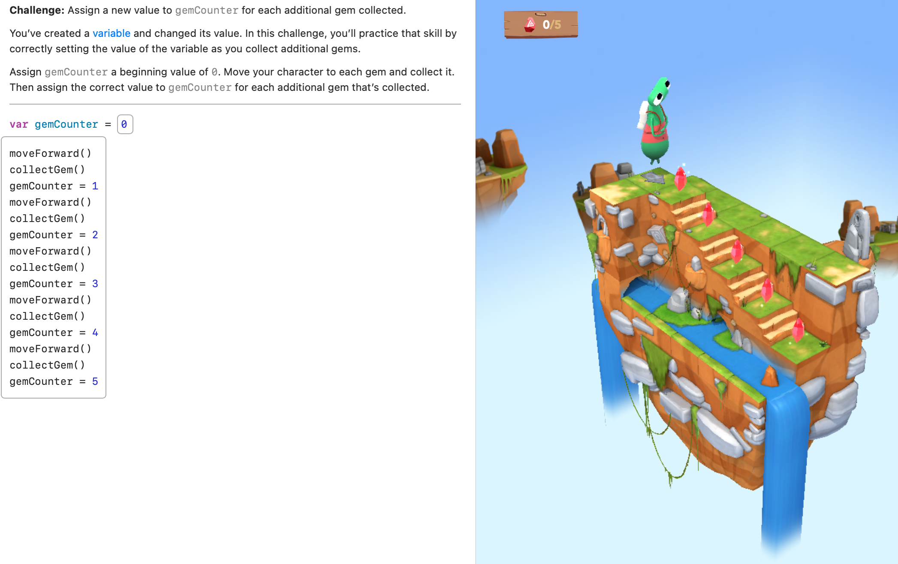
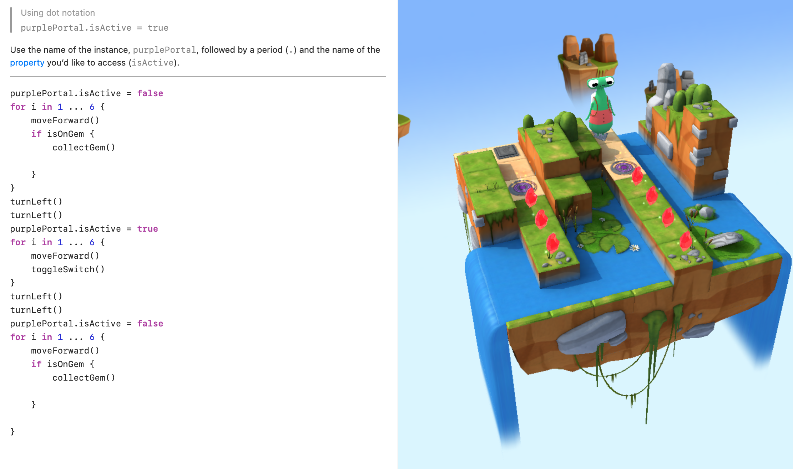

Sean Gordon's Portfolio - Unit 2
This page showcases work from Unit 2, including concepts like Variables, Types, Initialization, and more.


Concepts Covered in Unit 2
- Variables: Containers for storing data values.
- Types: Different kinds of data (e.g., integers, strings, booleans).
- Initialization: Assigning an initial value to a variable.
- Parameters: Variables passed into functions as inputs.
- World Building: Creating detailed worlds or environments for apps or games.
- Arrays: Data structures for storing multiple values in a single variable.